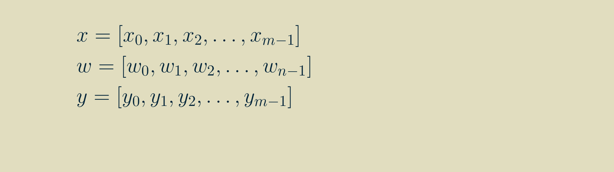
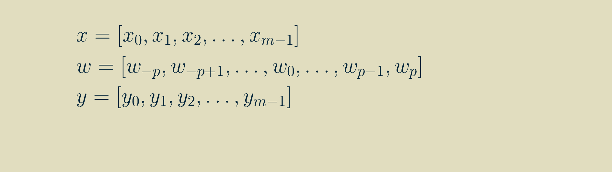
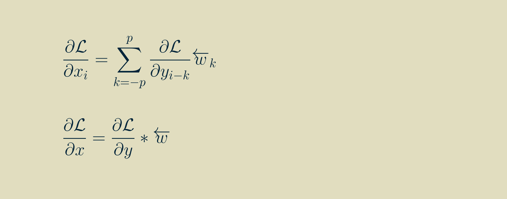
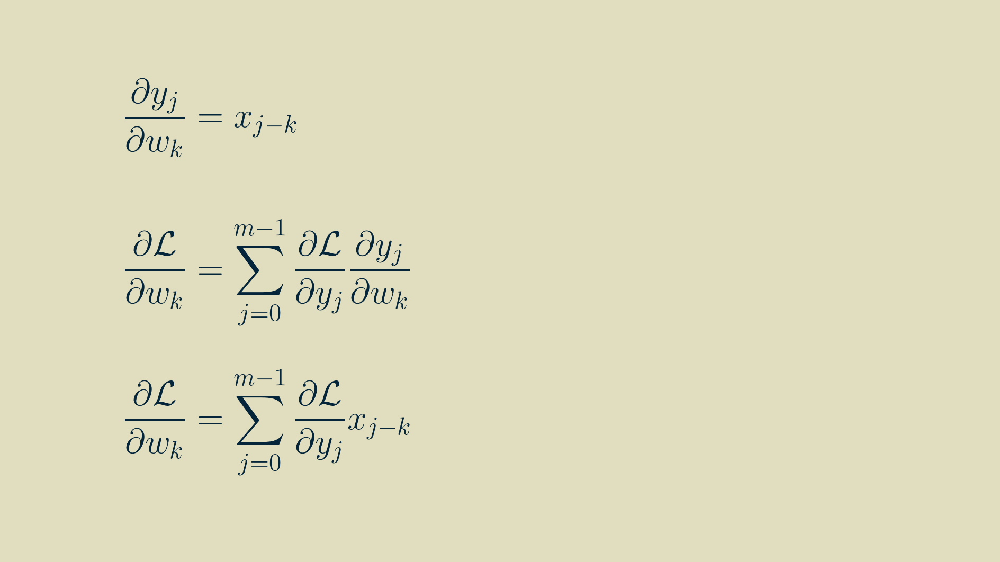
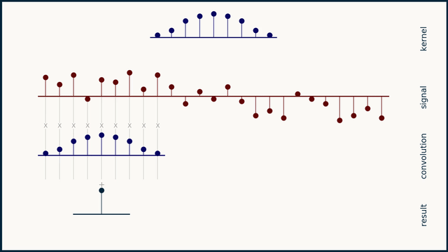
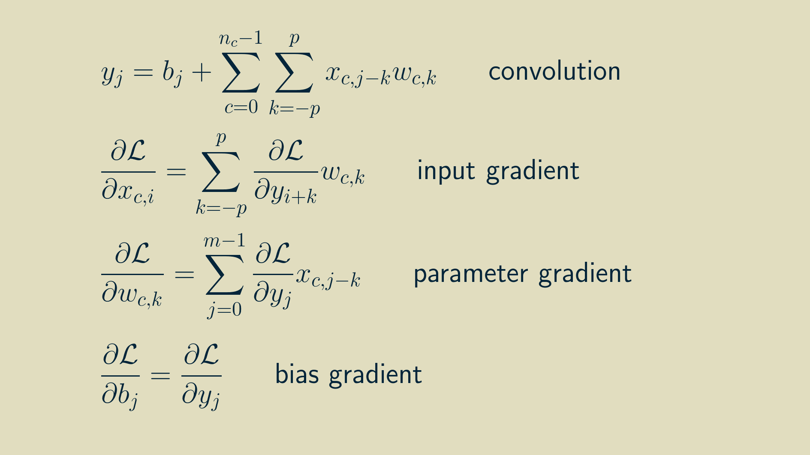

part of Course 321 One Dimensional Convolutional Neural Networks
Neural networks can now tell with reasonable accuracy whether a photo contains a dog. Not only that, but it can tell you what breed of dog it is more accurately than most humans. The mathematical magic that makes this possible is convolution. It endows the neural network with the ability to recognize particular patterns within the pixels so that it can distinguish a dalmatian from a dachshund.
Convolution is a good way to identify patterns in data that is directly tied to space or time. Adjacent pixels in an image are adjacent for a reason. In the physical world, they collect light from neighboring locations. Time series data has a similar structure. Neighboring data points were produced close together in time and are much more likely to be related then points far apart. This inherent structure is what convolution exploits. It finds local patterns that reoccur in the data. It would not be effective, for instance, if we first scrambled the pixels in an image. That would hide the patterns, the spatial relationships, that convolution tries to learn.
The math behind convolution is an artful combination of multiplication and addition. We can best get a feel for convolution by looking at a one dimensional signal. In this animation, we see a shorter sequence, the kernel, being convolved with a longer sequence, the signal. The math behind convolution doesn’t actually care which of these is longer, but it is convenient for us to assign this convention as we develop them for neural networks.
The recipe for convolution is surprisingly short:
- Flip the kernel left to right
- Step the kernel along the signal one data point at a time
- At each position, calculate the dot product of the two
- 3.1 Multiply each pair of aligned values together
- 3.2 Add up those products
- The resulting sequence of dot products is the convolution of the kernel with the signal
The formal definition of convolution extends from minus infinity to plus infinity. You can imagine both the signal and the kernel being padded with zeros out forever in both directions. The only non-zero values come when there is any overlap between the non-zero parts of the signal and the kernel.
In practice, you can choose to keep every part of the convolution that is non-zero, or you can limit your results to just those convolution values where the kernel completely overlaps the signal. You can also choose a compromise, which is to trim the convolution result to be the same length as the signal. For simplicity, we'll use this last option to start with.
We can rewrite this visualization as a sequence of equations. We will start by specifying that our signal, x is of length m, our kernel, w, is of length n and both are made up of real values. The result, y will be the same size as x.

To simplify the notation for ourselves later, we will add the additional constraint that n is odd, and that the length of our kernel can also be expressed as 2p+1. p in this case is a little less than half the length of the kernel. For a kernel with n=5,p would be 2.
Then, by walking through the recipe for convolution for a few steps, we can write out longhand the equations for each value of y, using the signal x and the kernel w.
Thankfully we can use the summation shorthand to represent this more concisely. In this formulation, any time we refer to a signal value outside the non-zero range of [0, m-1], we substitute in a zero.
And we can shorten it further by indexing on the signal position.
Convolution vs. cross-correlation
There is understandable confusion between convolution and cross-correlation. For discrete arrays of values, like we are showing here and like what would be used in any neural network, they are identical except that in cross-correlation the kernel is not flipped left-to-right before calculating the sliding dot product.
The distinction gets blurrier if you simply store and handle the convolution kernel in its pre-flipped state. Then it looks exactly like cross-correlation. Avoiding the kernel flip every time through the network may save some computation time. My understanding is that this is what PyTorch and TensorFlow do under the hood.
As a side note, you can cross-correlate a signal with itself, and the result is called an autocorrelation. ( An alternative interpretation of autocorrelation is that is shows how well a signal correlates with itself when shifted by a certain number of time steps.)
Differentiation
Since we are planning to use convolution in our network, we are only halfway done. Neural networks rely on backpropagation to learn their parameters, and backpropagation needs every step of the computation to be differentiable. We can stack any type of layer we want in a neural network, as long as we can take its derivative.
The process for setting up a layer for backpropagation is similar no matter what that layer does. The output gradient (the partial derivative of the loss function with respect to each of the layer's outputs) is the starting point.
To make backpropagation work, we have to calculate two groups of derivatives, the input gradient (the partial derivative of each of the layer's inputs with respect to the loss function), and the parameter gradient (the partial derivative of each or of the layer's adjustable parameters with respect to the loss function).
The input gradient is passed back to the previous layer in the network, which continues the process on up the line. The parameter gradient is used with an optimizer, like stochastic gradient descent, to adjust parameter values in an effort to get value of the loss function as low as possible.
Here we will step through the process of calculating the input gradient and the parameter gradient for one dimensional convolution. Keep in mind that you can follow a similar process for any differential computation that you would like to build into a neural network layer.
Input gradient
By the chain rule,
To find the input gradient we'll have to find the derivative of every input with respect to every output. To get at that, we can go back to one of our outputs at position j, not too close to either end of the array and write out the convolution equation for it.
In this form, we can take the derivative of each input with respect to the outputs it contributes to.
With some rearranging, we can group the terms by input.
At this point a neat pattern appears. We can use this to re-write the full expression for the input gradient from above.
If we adopt the notation of a left-facing arrow over an array to indicate that it has been reversed, left-to-right, pivoting about zero, then we can rewrite the input gradient as another convoltion with the reversed kernel. Note that i here varies between 0 and m-1, and that any values outside the range of the output gradient are assumed to be zero.

Parameter gradient
As with inputs, the goal is to find the partial derivative of the loss function with respect to each of the parameters, that is, each of the element values within the kernel.
We can make use of the expanded formulas for the outputs above to calculate the components of the parameter gradients too. Each of these expressions can be differentiated with respect to the parameters:

yielding
Now that we have some practice, we can pull out a similar pattern and simplify the expressions.

In this form, it is amenable to translating to computer code. However, for you who enjoy the mathematical pleasures of symmetry, the final result can be massaged into convolution if we again flip the array of input values left-to-right, pivoting around zero. Note that k here varies between -p,and p, and that any values outside the range of the output gradient are assumed to be zero.
Handling the beginning and the end
In order to make our output array y the same size as our input array x, we added a few extra zeros to each end of our input array. This practice is called padding. It’s pretty helpful when you need an array that’s a different size than the one you have.

The downside of padding an array with zeros is that we are actually fabricating data, and when we do this it’s possible to corrupt our signal. For instance, if our one dimensional data was a sequence of stock prices, adding zeros at the beginning and the end might make investors nervous. They don’t reflect reality. The desire is to extend the data with neutral points. In this case, zeros would be anything but neutral.
Another option for padding that can be quite benign is padding wtih non-zero constant values. We can choose some constant, such as the median of the array, or the average of the first six data points, or even the value of the first point, and pad the array with that.
Another option is mirror padding. In this case, we take whatever the length of the additional pad needs to be, pull that many values off the beginning (or the end), flip them around left-to-right, and attach them as the pad. This results in a short tail that is the mirror image of the original beginning (and end) of the data. For some data sets this creates a nice neutral set of data points that doesn’t change the meaning of the data. However, consider the case for you have daily time series data and a very big difference between weekday values and weekend values. In this case, taking a mirror image of the last few data points may get you two weekends in a row, or no weekends at all for 10 days. This would not result in a neutral extension of the data.
Yet another trick is circular padding. In this case, the last few elements are taken off the end of the array and copied over and tacked onto the beginning. Similarly, a copy of the first few elements is tacked onto the end. This makes the array appear as if it was part of a circular, repeating pattern. This can make good sense for time series data that is chopped into an whole number of weeks, or of years, or of whatever time interval is fundamental to the process being measured.
If you look carefully, all these different padding strategies generate different results. Padding is a fine idea as long as you have a good feeling for how to extend the data set in a way that doesn't corrupt it or change its meaning dramatically.
In a convolutional neural network, there’s nothing that says that our output array needs to be the same size as our input array. One very safe way to make sure all of our data is valid is to limit our convolutions to the positions in which the kernel is completely supported by the input. When we do this, our output is shorter than our input by the length of our kernel minus one. It also gives us peace of mind that every single output point is the result of a valid convolution. It frees us up from having to invent plausible data.
When we limit ourselves to valid convolutions, the math changes only superficially. Instead of both the input and output having the same length m, our input will have length m_x, and our output will have length m_y, equal to m_x - n + 1, where n is the length of the kernel. In the equations above where we calculate y all we have to do is limit our y indices to the valid positions.
Another way to think about this is that we still start with a y array the same size as our x array, but the only values we calculate are the valid, fully supported ones. The others stay empty and don’t get passed on to the next layer as outputs.
When calculating gradients, we can do the reverse. We track the valid values for dL/dy, and if the equation asks for any not-valid value it gets a zero instead. This helps it to ignore all of the locations that don’t have an output gradient associated with them.
Python implementation
Numpy‘s convolve() function handles one dimensional
convolution seamlessly. You can specify
mode="full" to keep all the non-zero values,
mode="valid" to only keep the completely overlapping
values, or mode="same" to ensure the result is the
sampe length as the signal.
What we described here is equivalent to working
with the mode="same" condition.
To take advantage of Numpy's full collection of padding tools, check out the documention for the pad() function.
Stride
Another useful trick in calculating convolutions for neural networks is to not calculate them for every pixel, but to skip to every second or third value. This skip is called a stride. Calculating the convolution at every location corresponds to a stride of one. Skipping every second value is a stride of two, and so forth. The number of calculations that you have to do for one dimensional convolution is one over the stride, so you can see the efficiency motivator behind it.

When we go to implement a stride convolution, we can use the same trick of initializing an output array the same size as our input array, then step through it and only calculate convolutions for the locations that match our stride. Then when we’re done, we pull out and condense just the calculated convolutions and pass them on as the output.
Then when we go to backpropagate the output gradient, we can create a full array of zeros that matches the size if the input array, and we can populate it with all of the strided output gradient values. Then, it will look like a complete, dense set of output gradients, but with all of the skipped values as zeros. From there, we can treat it as we would any other complete set of output gradients, and the zeros in the skipped positions will ensure that they get handled appropriately.
The fastest computations are the ones you never have to do, so introducing a stride can speed up a neural network considerably.
Multiple channels
One dimensional data often comes in the form of several parallel channels or streams. Economic data can be collected as many different indices (say, the price of a barrel of oil, the gross domestic product, and the unemployment rate) collected over the same time period at the same intervals. Weather data can be organized as hourly temperature measurements collected at different locations. Electroencephalographic recordings come in a bundle of 128 channels.
What defines a multichannel signal is that the signals within it share a common axis — in these examples, all measurements were made at the same times. The order of events on this organizaing axis matters. Rearranging the items in a time sequence scrambles the meaning out of it. What makes these different than a true two dimensional signal is that the order of the channels themselves doesn't matter. You can re-order the list of cities in a set of temperature measurements and it doesn't change what the data means. If the temperature-by-city data were represented in a table, with each row being a city and each column being an hourly measurement, then we can see how rearranging the rows wouldn't mess up the data set, but rearranging the columns would make it much harder to interpret. Another way to say that is that the row order doesn't contain any information, but the column ordering does.
In a multichannel signal, we can treat teach channel independently, as its own flavor or color of data, not to be mingled with the others. Because of this, we can't expect that the same kernel structure will be meaningful across different channels. To handle this, we instead create and learn multi-channel kernels — a stack of kernels bound together, one for each channel.
The math for multi-channel convolution looks almost the same as for single channel, except for an additional summation over all the channels. For gradient calculations it's even more similar. You just have to work with one channel at a time. In the equations below, c is the channel index.
The result of a multichannel convolution is a single channel output. Because the sliding dot product covers all the channels at once, they all get summed together and reduced down to a single channel. However, a convolutional layer will have several kernels. Each kernel acts as a feature detector, so the result of the convolution is sometimes called a feature map, a map that shows where in the signal the kernel occurred. The combined result of a set of kernels is a collection of feature maps. For one dimensional data, this is a multichannel one dimensional signal. (Typically the number of kernels in a layer is a small exponent of two, like 16 or 64. The exact number is a hyperparameter that can be adjusted based on the particular problem you are working on.)
Now we've closed the circle on one dimensional convolution layers. A convolution layer accepts a multichannel one dimensional signal, convolves it with each of its multichannel kernels, and stacks the results together into a new multichannel signal that it passes on to the next layer. Because its outputs look like its inputs, it means we can stack as many of them together as we like, just like Lego bricks.
Bias
The only piece we are missing now is the bias. Each output has a learned bias value that is added into the result of the convolution. It’s a constant value, b. It is similar to the bias node in a dense neural network. It provides a constant offset to a given output whenever it's advantageous to do so.
Because the bias stands alone, it doesn’t show up anywhere in the input gradient. The derivative of the output with respect to a constant bias is always one, making a trivial addition to the collection of parameter gradients.
The final set of equations looks like this:

To walk through the process of implementing this in a Python machine learning framework, come join us in e2eML Course 321. It's a work in progress, to be complete June 1.